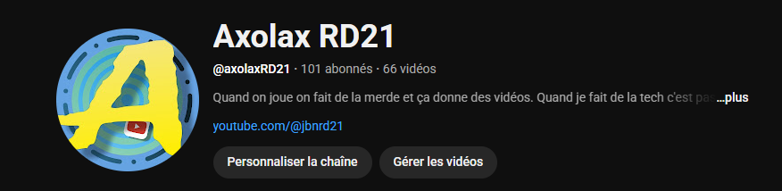
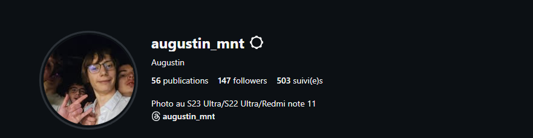
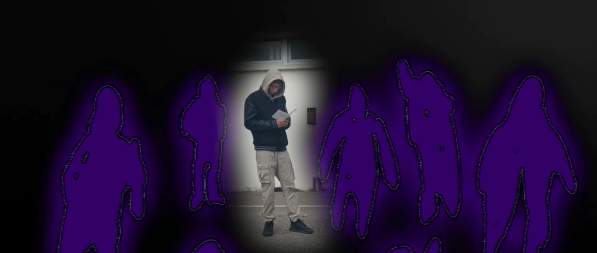

Mes Projets
Contact
Augustin Minot
MONTEUR VIDEO / DESIGNER
Mes Projets

Ma Chaine YouTube

Mon compte Photo Instagram
Court Métrage au concours des 48H

Courts Métrages fait en classe
❮
❯
Me contacter